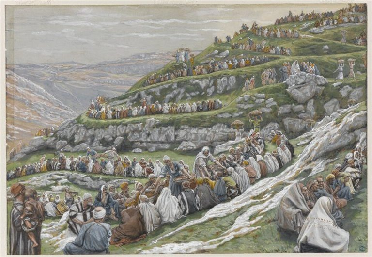
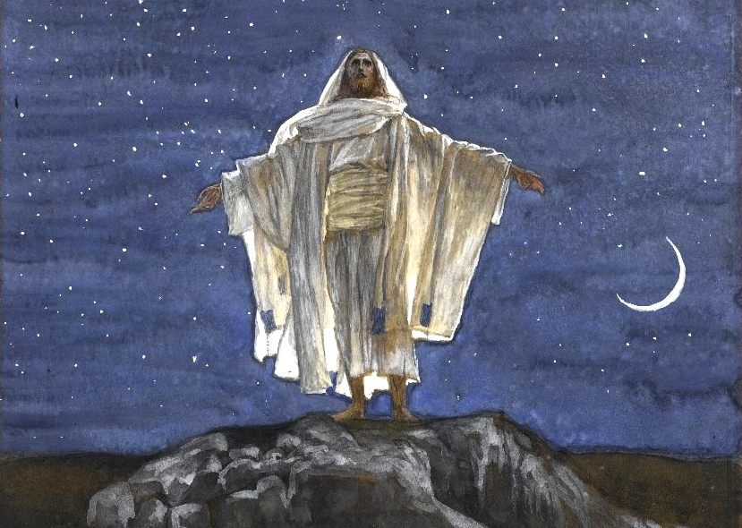
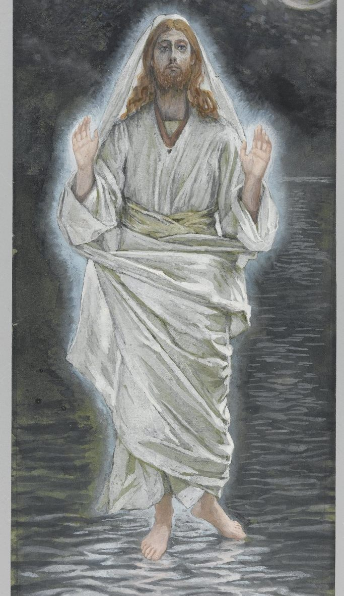
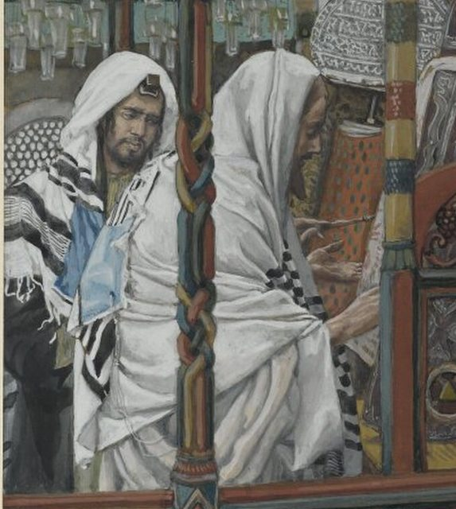

John 6
The bread of life
Jesus feeds five thousand, walks on a stormy sea, and tells the crowd he is the bread they've really been hungry for.
Things to watch for
Keep these questions in the back of your mind as we read. We'll come back to every one of them at the end.
- Who Jesus isWhat does Jesus mean when he says, “I am the bread of life”?
- A little in his handsWhat can Jesus do with the little we bring him?
- FearWhat does Jesus say to us in the storm?
- SalvationWhat work does God want from us?
- SecurityWill Jesus ever cast out someone who comes to him?
- FollowingWhy did Peter stay when so many walked away?
Part one
Bread for five thousand
Verses 1–15
A hungry crowd, a hillside, and one boy's lunch.
One lake, two names
The Sea of Galilee is really a freshwater lake, about 13 miles long and 8 across. Herod the tetrarch built a city on its west shore and named it Tiberias, after the Roman emperor. So the lake picked up that name too.
The feeding happened on the hills near Bethsaida (Luke 9:10). That night the disciples rowed back across toward Capernaum, Jesus' home base.
“The passover… was nigh.” This is the second Passover John mentions (2:13, 6:4, 11:55). Counting them is how we know Jesus' ministry lasted about three years.
A test Philip did the math on
A “penny” here is a Roman silver coin, a day's pay for a working man: “he had agreed with the labourers for a penny a day” (Matthew 20:2).
And Philip says even that wouldn't give everyone “a little.” He counted what they had, and he was right. It wasn't enough.
Jesus “knew what he would do.” He wasn't asking for a plan. He was asking whether Philip would look past the numbers to him. When the math says it can't be done, that's usually where Jesus starts.
What are they among so many?
each dot is 100 men, about 5,000 in all, “beside women and children” (Matthew 14:21)
Barley bread was the cheap bread, what poor families ate. The fish were small, likely dried or pickled to go with the bread. A boy's lunch.
Andrew was right: it was nothing next to the need. But he brought it to Jesus anyway. That's all Jesus asks. Not that what you bring is enough, just that you bring it to him.
Through his disciples' hands

Jesus gave thanks for five loaves before there was enough. He thanked the Father for what he had, not for what he was about to have.
The miracle happened in the disciples' hands as they kept handing it out. They never saw a pile of bread appear. They just kept giving, and it kept being there. And everyone ate “as much as they would,” as much as they wanted.
Mark 6:39–40 adds that they sat in groups of fifties and hundreds on the green grass. Even at a picnic for thousands, God is a God of order.
More left over than they started with
started with: 5 small loavesleft over: 12 baskets
Twelve baskets, one for each disciple who had wondered how they'd ever feed this crowd.
Jesus cared about the fragments, the broken pieces. He wastes nothing. Not leftover bread, and not the broken pieces of your life either. The years you think were wasted, he can gather up and use.
The wrong kind of king
“That prophet” is the one Moses promised (Deuteronomy 18:15). Moses gave Israel bread in the wilderness. Here was a man who could do the same. Make him king, and nobody goes hungry again. Kick out the Romans while he's at it.

So he walked away from the crowd, alone, up the mountain. The other Gospels tell us he went there to pray (Matthew 14:23). He wouldn't be the kind of savior they wanted. He came to be the kind they needed.
Part two
It is I
Verses 16–21
Dark water, a hard wind, and Jesus walking toward them on the waves.

Rowing in the dark
The lake sits about 700 feet below sea level, ringed by hills. Cool air pours down through the valleys and can whip the water into a storm in minutes.
These men had obeyed. Jesus sent them across (Mark 6:45). Obeying didn't keep them out of the storm.
“It was now dark, and Jesus was not come to them.” Every man knows that hour: 2 a.m., the wind howling, the old craving pulling, and it feels like he isn't coming. He saw them the whole time (Mark 6:48). And he was already on his way.
“It is I”
It's the same pair of words Jesus will use in verse 35, “I am the bread of life.” And it echoes the name God gave Moses at the burning bush: “I AM THAT I AM” (Exodus 3:14). The One walking on the water is the One who made the water.
Twenty-five or thirty furlongs is about three or three and a half miles, the middle of the lake. Then the moment they took him in, “immediately the ship was at the land.” The storm that had beaten them all night was over the moment he was in the boat.
Part three
I am the bread of life
Verses 22–59
The crowd tracks Jesus down for more bread. He offers them himself.
Food that spoils, food that lasts
“the meat which perisheth”
fills you for an afternoon, and you're hungry again by night
“meat which endureth”
everlasting life, given by the Son of man
In the King James, “meat” means food of any kind. Jesus tells them plainly why they came back: “ye did eat of the loaves, and were filled.” They wanted another free meal, not him.
We all chase things that fill us for a while: a high, a drink, money, a woman, a win. Every one of them perishes, and the hunger always comes back. “Sealed” means the Father has put his stamp of approval on Jesus. He is the real thing.
“What shall we do?”
They asked for a list of works. Jesus gave them one item.
- keep the rules betterthey'd been trying that for centuries
- clean up your life firstyou can't, not on your own
- earn enough good to outweigh the badthere's no such scale
- “that ye believe on him whom he hath sent”the work God asks is to trust his Son
“For by grace are ye saved through faith; and that not of yourselves: it is the gift of God: Not of works, lest any man should boast.”
Ephesians 2:8–9
Manna and the true bread
For forty years God fed Israel with manna, bread that showed up on the ground every morning. The crowd wanted Jesus to top that. He tells them manna was only a picture. He is what it pictured.
This is the first of seven “I am” sayings in John. Bread was the most basic food there was. Jesus is saying: I'm not a side dish or a treat. I am what you need to live.
“Never hunger… never thirst.” Most of us know a hunger that nothing would fill. We kept feeding it, and it kept wanting more. That hunger was made for God. Come to him, and that empty place finally gets filled.
Held by his promise
“In no wise” means never, for any reason. There is no sin, no relapse, no past bad enough that Jesus will turn away a man who comes to him.
And once you come, he keeps you. It's the Father's will that he “should lose nothing.” Watch how many times he promises to raise them up “at the last day”:
“And I give unto them eternal life; and they shall never perish, neither shall any man pluck them out of my hand.”
John 10:28
Your security doesn't rest on how tightly you hold him. It rests on how tightly he holds you. Who is it for? “Every one which seeth the Son, and believeth on him” (v. 40).
Who does the Father draw?
Nobody comes to Christ on his own steam. God always makes the first move: he calls, convicts, and pulls a man toward his Son.
And who does he draw? Jesus answers that himself: “And I, if I be lifted up from the earth, will draw all men unto me” (John 12:32). Verse 45 says “every man” who hears and learns from the Father comes.
If you feel a pull toward Jesus right now, that is God drawing you. Don't fight it. Come.
What does “eat my flesh” mean?
Put two of his sentences side by side. Same promise, same result. One says it plainly, the other paints a picture:
To eat his flesh and drink his blood is to believe on him: to take his death on the cross for you and make it your own, the way food becomes part of you. He isn't talking about anything you chew, and it isn't a ceremony that saves you. He says it himself in verse 63: “the words that I speak unto you, they are spirit.”
He in me, and I in him
Not visiting. Dwelling.

Food doesn't stay on the plate. Once you eat it, it lives in you and gives you strength. Jesus says it's like that with him. The man who believes lives in Christ, and Christ lives in him, by his Holy Spirit, from the moment he believes.
And you don't eat once a year. You eat every day. Feeding on Jesus is daily: in his Word, in prayer, in remembering what he did for you.
He said all this in the synagogue at Capernaum, his home base. These were the neighbours who had watched him heal their sick.
Part four
To whom shall we go?
Verses 60–71
The crowd thins out. Jesus turns to the twelve.
A hard saying
“Hard” here doesn't mean hard to understand. It means harsh, hard to swallow. They understood enough to be offended.
“Quickeneth” means makes alive. “Profiteth nothing” means is no help at all. Your own strength, your willpower, your best effort can't make a dead man alive. Only the Spirit of God can.
Some of us tried to quit on willpower a dozen times. Jesus isn't asking you to try harder. He's offering you life you can't make yourself, through his words, which “are spirit, and they are life.”
From thousands to twelve
When following Jesus got hard, the crowd went home. Jesus didn't chase them or soften what he said. He turned to the twelve: “Will ye also go away?”
Peter didn't have it all figured out. But he knew this: there's nowhere else to go. Back to the old life? We've been there. We know how it ends. “Thou hast the words of eternal life.”
Close, but not in
“Devil” here is diabolos: slanderer, accuser, adversary. Jesus is saying one of his own twelve was working for the other side.
Judas was chosen to be one of the twelve. He heard every sermon, saw the bread multiply, and carried the money bag. But verse 64 says he never believed. Being around Jesus isn't the same as trusting him.
And notice: Jesus knew all along, and he still washed Judas' feet and offered him bread at the last supper. The door stayed open to the very end.
Points to remember
- Who Jesus is“I am the bread of life” 6:35Jesus is what we need to live. Only he fills the hunger nothing else can.
- A little in his hands“But what are they among so many?” 6:9Bring him what little you have. He feeds thousands with it, and wastes nothing.
- Fear“It is I; be not afraid” 6:20He sees you in the dark, and he is already on his way.
- Salvation“That ye believe on him whom he hath sent” 6:29The work God asks is to believe on his Son. Not works, but faith.
- Security“I will in no wise cast out” 6:37He turns away no one who comes, and loses no one he receives.
- Following“Lord, to whom shall we go?” 6:68When it gets hard, there's nowhere else to go. He has the words of eternal life.
Question 1 of 6
Who Jesus isWhat does Jesus mean when he says, “I am the bread of life”?
What verses tell us about this?
Answer
Bread is what you need to stay alive. Jesus came down from heaven to give real, everlasting life, and he gave his own flesh on the cross to do it. Whoever comes to him and believes on him finds the hunger of the soul finally satisfied.
Question 2 of 6
A little in his handsWhat can Jesus do with the little we bring him?
What verses tell us about this?
Answer
Far more than we can imagine. Five small loaves and two fish fed about five thousand men, and there were twelve baskets left over. What we bring is never enough on its own. It doesn't have to be. In his hands it becomes more than enough, and he wastes none of it.
Question 3 of 6
FearWhat does Jesus say to us in the storm?
What verses tell us about this?
Answer
“It is I; be not afraid.” The storm came even though they were obeying him, and for a while it felt like he wasn't coming. But he came walking over the very waves that scared them. When they took him into the boat, they were safe on shore.
Question 4 of 6
SalvationWhat work does God want from us?
What verses tell us about this?
Answer
To believe on Jesus, the One the Father sent. The crowd wanted a list of things to do. Jesus gave them one: trust him. Whoever believes on him has everlasting life right now. It's a gift, received by faith, not wages earned by works.
Question 5 of 6
SecurityWill Jesus ever cast out someone who comes to him?
What verses tell us about this?
Answer
Never. “In no wise” means not for any reason. Anyone who comes to him is received, and once received, he loses none of them. He promises again and again to raise each one up at the last day. Our security rests on his grip, not ours.
Question 6 of 6
FollowingWhy did Peter stay when so many walked away?
What verses tell us about this?
Answer
Because he knew who Jesus was: the Christ, the Son of the living God, the only One with the words of eternal life. Peter didn't understand everything. But he knew there was nowhere else to go. When following Jesus gets hard, going back to the old life is no answer at all.
Prayer requests
What can we pray about for you today?
“Casting all your care upon him; for he careth for you.”
1 Peter 5:7